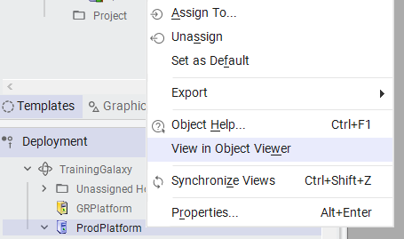
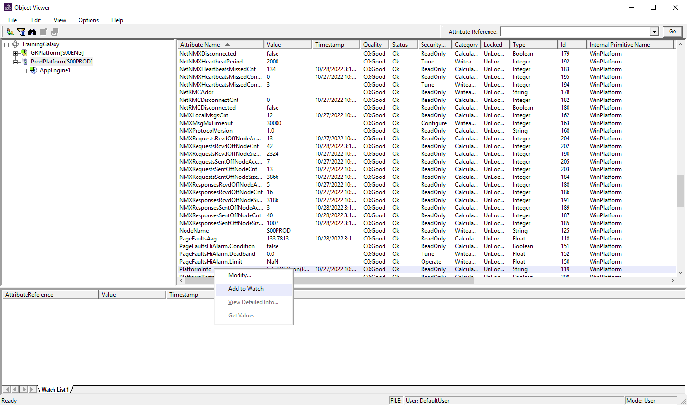
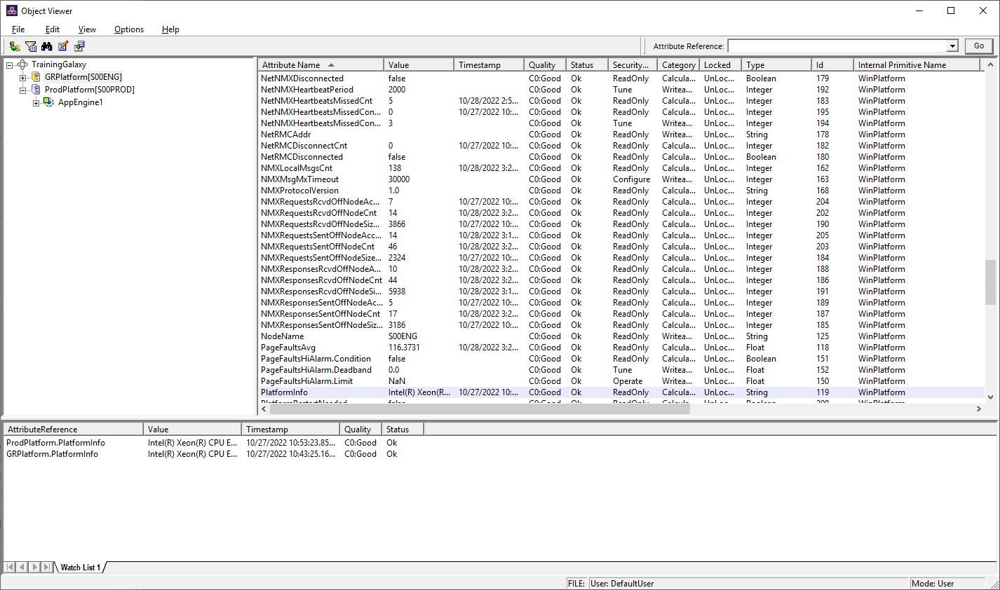
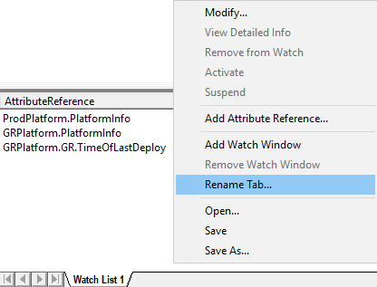
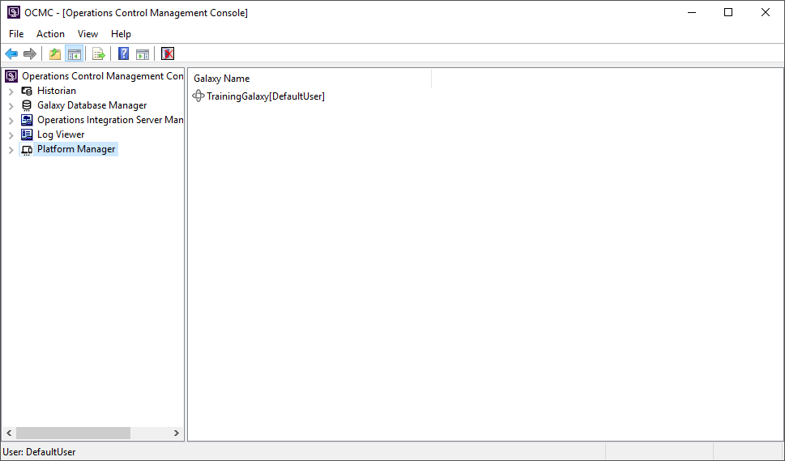
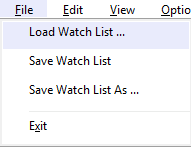
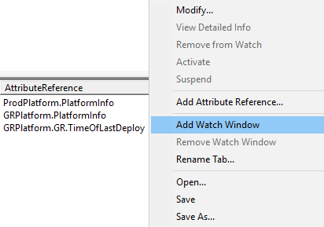
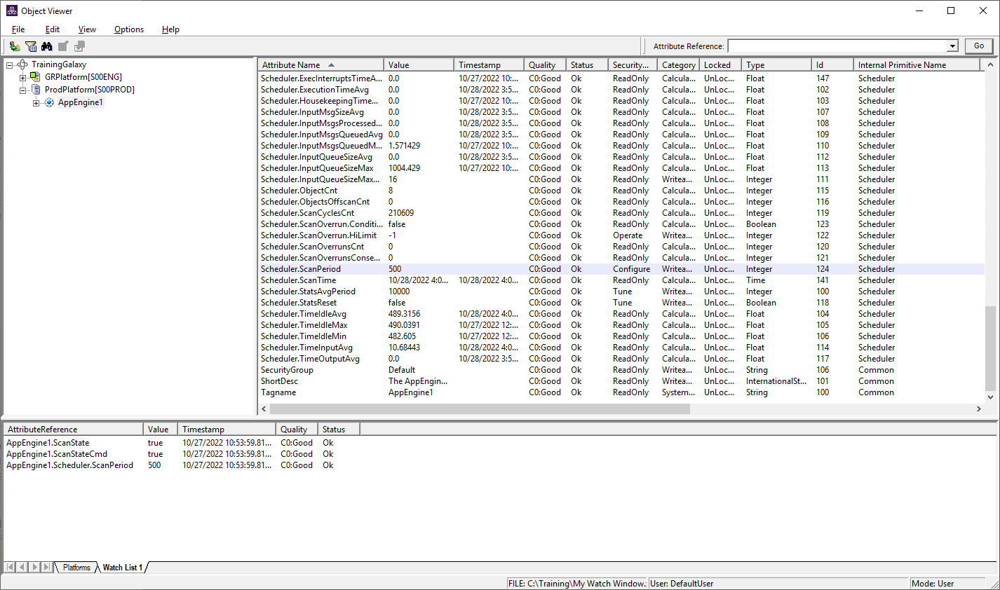

Source: AVEVA Application Server 2023 Training Manual, Module 3, Lab 4 (pages 3-43 to 3-55)
After deploying your Galaxy and starting runtime, Object Viewer is your window into the live system — the tool that lets you browse every object, inspect every attribute, and even modify values on the fly.
Reference: Module 3, Lab 4 (page 3-43)
In this lab you will use the Object Viewer — the runtime inspection and monitoring utility built into Application Server — to interact with a deployed Galaxy. Object Viewer connects directly to the Galaxy Server runtime and provides a live view of all deployed objects and their attributes.
Reference: Module 3, Lab 4 (pages 3-44 to 3-46)
Object Viewer can be launched directly from the IDE's Deployment view. Before opening it, ensure that:
The most common way to open Object Viewer is from the IDE's Deployment view:

Object Viewer can also be launched independently from the Windows Start Menu at AVEVA → Application Server → Object Viewer. When launched this way, you must manually select the Galaxy to connect to from the connection dialog.
When Object Viewer launches, it establishes a connection to the Galaxy Server runtime. If you launched it via "View in Object Viewer", the connection is made automatically to that Galaxy. If launched standalone, a Connect to Galaxy dialog appears:

Reference: Module 3, Lab 4 (page 3-48)
Once connected, the Object Viewer window is divided into two main areas:
| Area | Purpose |
|---|---|
| Tree Pane (left) | Displays the Galaxy hierarchy — platforms, deployed objects, and system folders organized in a tree structure |
| Details Pane (right) | Shows the attributes, values, timestamps, quality, and type information for the currently selected object |

In the tree pane, the Galaxy is organized under a top-level node (e.g., TrainingGalaxy). Below it are the Platform objects representing the deployment nodes:
| Node | Description |
|---|---|
GRPlatform[S00ENG] |
A platform deployed to the S00ENG node (e.g., the development or engineering station) |
ProdPlatform[S00PROD] |
A platform deployed to the S00PROD node (e.g., the production station) |
AppEngine1 |
An Application Engine object deployed under a platform — contains the application logic and attributes |
Clicking on a platform node in the tree reveals the objects deployed under it. Clicking on a specific object (like AppEngine1) displays its attribute list in the right-hand details pane.
When an object is selected, the details pane shows a table of attributes with the following columns:
| Column | What It Shows |
|---|---|
| Attribute Name | The identifier of the attribute (e.g., PlatformInfo, PageFaultsAvg, NetNMXHeartbeatPeriod) |
| Value | The current real-time value of the attribute |
| Timestamp | When the value was last updated |
| Quality | A quality code indicating data reliability — C0:Good means the value is valid and trustworthy |
| Security | The security access level required to modify this attribute |
| Type | The data type of the attribute (e.g., String, Integer, Boolean) |
C0:Good means the attribute value is valid. Other codes indicate problems: for example, a quality code starting with B or C with a non-zero value may indicate a communication failure, out-of-range value, or sensor fault. Always check quality when troubleshooting unexpected values.
Reference: Module 3, Lab 4 (page 3-49)
The left pane of Object Viewer presents the Galaxy in a hierarchical tree structure. Understanding this tree is essential for finding and inspecting any object in your deployment.

For large Galaxies with many deployed objects, manually expanding the tree can be time-consuming. Object Viewer provides search capabilities:
Ctrl+F) to search for an object by nameTrainingGalaxy.GRPlatform.AppEngine1.PV. You can copy an object's path from the context menu for use in scripts or other tools.
Reference: Module 3, Lab 4 (page 3-51)
While Object Viewer provides detailed attribute-level inspection, the Operations Control Management Console (OCMC) — specifically the Platform Manager — provides a higher-level view of platform status and management.

The Platform Manager in OCMC allows you to:
TrainingGalaxy[DefaultUser])Reference: Module 3, Lab 4 (pages 3-53 to 3-54)
The Watch Window is one of Object Viewer's most powerful features. It allows you to collect attributes from different objects across the Galaxy and display them together in a single, real-time updating view — like a custom monitoring dashboard.
To add attributes to the Watch Window:

Once populated, the Watch Window displays an AttributeReference list — each entry shows the full attribute path and its live value. The entries update automatically as the runtime values change.

In this example, the Watch Window monitors attributes from multiple platforms simultaneously:
| Attribute Path | What It Shows |
|---|---|
ProdPlatform.PlatformInfo |
Platform information string for the production platform |
GRPlatform.PlatformInfo |
Platform information string for the engineering platform |
GRPlatform.GR.TimeOfLastDeploy |
Timestamp of the last deployment to the GR platform — useful for verifying deployment recency |
| Action | How |
|---|---|
| Add an attribute | Right-click attribute in details pane → Add Watch Window |
| Remove an attribute | Right-click attribute in Watch Window → Remove |
| Clear all entries | Right-click in Watch Window → Clear All |
| Copy attribute path | Right-click → Copy — useful for pasting into scripts or other tools |
Reference: Module 3, Lab 4 (page 3-55)
Object Viewer does not just let you observe — it also lets you write new values to certain attributes at runtime. This is extremely useful for testing logic, overriding defaults, and simulating field conditions without changing the actual hardware.

Typically writable attributes include:
Typically read-only attributes include:
In this lab you learned the essential skills for using Object Viewer:
| Skill | What You Did |
|---|---|
| Open and connect | Launched Object Viewer from the Deployment view via right-click → "View in Object Viewer", connecting to the Galaxy runtime |
| Browse the hierarchy | Navigated the Galaxy tree to find platforms (GRPlatform, ProdPlatform) and their deployed objects (AppEngine1) |
| Inspect attributes | Read attribute values, quality codes, timestamps, security levels, and data types in the details pane |
| Watch Window | Added attributes from multiple platforms to a single monitoring view (AttributeReference list) |
| Platform Manager | Used OCMC Platform Manager to view platform deployment status and connectivity |
| Modify values | Wrote new values to writable attributes at runtime to test and override behavior |
What is the most common way to launch Object Viewer from the IDE, and what does the right-click context menu on a deployed object include?
The most common way is to right-click on a deployed object in the IDE's Deployment view and select "View in Object Viewer" from the context menu. The context menu also includes options for Deploy, Undeploy, Upload Changes, and Properties.
When you select an object in the Object Viewer tree, what columns are displayed in the details pane, and what does a Quality code of C0:Good mean?
The details pane displays columns for Attribute Name, Value, Timestamp, Quality, Security, and Type. A Quality code of C0:Good means the attribute value is valid, reliable, and trustworthy — there are no communication failures or data quality issues.
In the TrainingGalaxy shown in the lab, what are the two platforms, and what type of object is AppEngine1?
The two platforms are GRPlatform[S00ENG] (deployed to the engineering station) and ProdPlatform[S00PROD] (deployed to the production station). AppEngine1 is an Application Engine object deployed under a platform — it contains application logic and exposes attributes like PlatformInfo, PageFaultsAvg, and NetNMXHeartbeatPeriod.
How do you add an attribute to the Watch Window, and what is the advantage of the Watch Window compared to the details pane?
To add an attribute to the Watch Window, right-click on the attribute in the details pane and select "Add Watch Window". The advantage is that the Watch Window lets you monitor attributes from multiple different objects and platforms simultaneously in a single view (the AttributeReference list), whereas the details pane only shows attributes for one selected object at a time.
Is Object Viewer used for modifying Galaxy configuration (templates, scripts, object definitions)? Explain the distinction between Object Viewer and the IDE.
No — Object Viewer does not modify Galaxy configuration. It is a runtime tool that connects to the Galaxy Server to inspect and interact with live deployed objects. For configuration changes (adding attributes, changing templates, modifying scripts), you must use the IDE. Object Viewer is for inspection, monitoring, and temporary value overrides only.
If you manually write a new value to an output attribute using Object Viewer, will that value persist indefinitely? What might overwrite it?
No, the value will not necessarily persist. Writing a value via Object Viewer is a temporary override. If the object's script or control logic recalculates that output attribute on the next execution cycle, the manually written value will be overwritten. To maintain a manual override, the object should typically be placed in Manual mode, which prevents automatic recalculation of the output.
End of Lesson 9 — Module 3: Lab 4 — Using Object Viewer